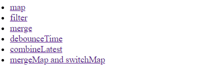
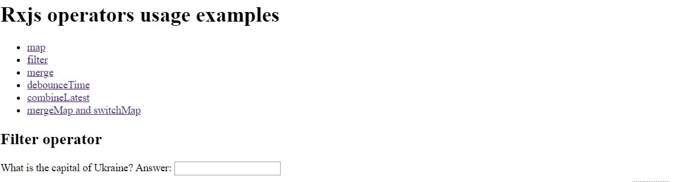
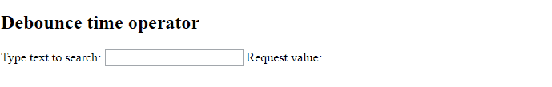
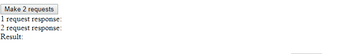

Most often used rxjs operators
July 22, 2018
In the previous post I was explaining the main concept behind rxjs library. In this one I am going to cover the most often used operators from rxjs library. I will show basic examples of their usage inside angular application.

Full source code is available on github.
1. map - modifies values emitted by observable
Let’s assume we have http service that returns user information in json format.
{
"name": "John",
"age": 24,
"hobbies": [],
...
a lot of other properties
}
However, on client side we need to know only user’s name to handle application business logic. Then,
we can do following:
this.httpClient.get('assets/user.json')
.pipe(
map((response: any) => response.name),
)
.subscribe((name: string) => {
this.userName = name;
});
Map operator function gets emitted value as input and must return modified value as output.
2. filter - filters values emitted by observable against specified condition
There is an html input element where user should type the correct answer on the given question.
We may create observable that emits the input value each time when user types the character.
Because we should do nothing until user finishes typing correct string there is a good case
to use filter operator to handle this. Once user has typed correct answer we show success alert
to him.
this.questionForm.get('answer').valueChanges
.pipe(
filter((value: string) => {
return value.toLowerCase() === 'kyiv';
})
)
.subscribe((value) => {
setTimeout(() => {
alert('Correct!');
});
});

3. merge - combines multiple observables into one
This operator mainly used when we should apply same logic on values emitted by different observables.
Assume that we have several html inputs on the screen and should count total number of changes
user has made in all of them over the time.
We may separately subscribe to each input valueChanges but it is more lean and readable to
use merge operator in this case
merge(
this.form.get('first').valueChanges,
this.form.get('second').valueChanges,
this.form.get('third').valueChanges
)
.subscribe((value) => {
this.numberOfChanges++;
});
Note:
- if you don’t use operator inside
pipefunction you must import it from rxjs folder.
import { merge } from 'rxjs';
- merge operator combines emitted values in the same order that they were emitted by the Observables
(in contrast to
concatoperator which combines only after first observable has completed).
4. debounce-time - debouncing based on time between input
What if there is an html input and client should send http request right after user
has typed searched text inside it. We may solve this task by sending request, for example,
1 second after user stopped typing. And it is where debounceTime operator comes into play.
this.searchForm.get('search').valueChanges
.pipe(
debounceTime(1000)
)
.subscribe((value) => {
this.requestValue = value;
});

5. combineLatest - when any observable emits a value, emit the latest value from each
What if it is needed to combine responses from several services before displaying data on the page. We need to wait until all made http requests finish in order to accomplish this. combineLatest helps to solve the issue.
combineLatest(
this.requestName(),
this.requestHobbies()
)
.subscribe(values => {
this.result = `${values[0]} hobbies are ${values[1]}`;
});

6. mergeMap
There is a great article that explains those operators.
Let us assume we have a button and create Observable for emitting its click events:
const click$ = fromEvent(this.startInterval.nativeElement, 'click');
After button is clicked we want to return new observable. We may do this way:
click$
.pipe(
map((clickEvent) => {
return interval(1000);
})
)
In order to consume emitted values from interval(1000) observable we need to subscribe to it.
click$
.pipe(
map((clickEvent) => {
return interval(1000).subscribe((item) => {
console.log(item);
});
})
)
This code looks bad because of nested subscribes. We will also have a problem with unsubscribing from inner observables.
In order to simplify the syntax mergeMap operator was created.
What it does: once inner observable interval(1000) emits, merge its values into outer observable click$.
click$
.pipe(
mergeMap((clickEvent) => {
return interval(1000);
})
)
.subscribe((item) => {
console.log(item);
});
One important point here: if you click button several times you will get several inner subscriptions. Thus each new click returns new observable.
If it is not what you need look at the next operator #6.
7. switchMap
Works same way as mergeMap but cancels the inner subscription once outer observable emits.